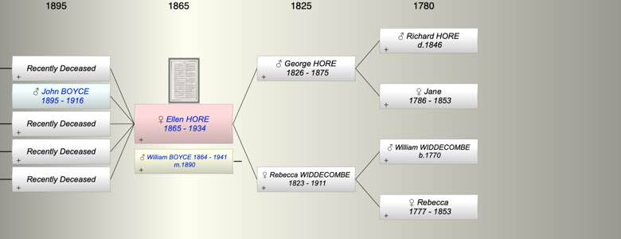
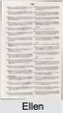
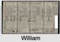

| [Index] |
| Ellen Rebecca HORE (1865 - 1934) |
|  |
|   |
| b. 1865 at Exmouth |
| m. 1890 William Edmund BOYCE (1864 - 1941) |
| d. 23 Aug 1934 at Exmouth aged 69 |
| Near Relatives of Ellen Rebecca HORE (1865 - 1934) | ||||||
| Relationship | Person | Born | Birth Place | Died | Death Place | Age |
| Grandfather | Richard HORE | 1846 | ||||
| Grandmother | Jane | 1786 | 1853 | 67 | ||
| Grandfather | William WIDDECOMBE | abt 1770 | Lympstone, Devon ? | |||
| Grandmother | Rebecca | 1777 | Lympstone, Devon | 1853 | 76 | |
| Father in Law | Edmund William John BOYCE | 06 Dec 1830 | Shaldon, Devon | 1910 | 80 | |
| Mother in Law | Elizabeth REEVE | 1839 | Heavitree/Wonford, Devon | 25 Jun 1911 | Bath | 72 |
| Father | George HORE | 1826 | Exmouth | 12 Jan 1875 | at Sea | 49 |
| Mother | Rebecca WIDDECOMBE | 1823 | Lympstone, Devon | 1911 | 88 | |
| Self | Ellen Rebecca HORE | 1865 | Exmouth | 23 Aug 1934 | Exmouth | 69 |
| Husband | William Edmund BOYCE | 18 Jun 1864 | Exmouth? | 21 Jun 1941 | Exmouth | 77 |
| Son | Living or Recently Deceased | |||||
| Son | John Reginald BOYCE | 1895 | Exmouth | 10 May 1916 | 21 | |
| Daughter | Living or Recently Deceased | |||||
| Son | Living or Recently Deceased | |||||
| Son | Living or Recently Deceased | |||||
| Sister | Jane HORE | 1850 | Lympstone, Devon | |||
| Sister | Charlotte HORE | 1851 | Exmouth | 1893 | 42 | |
| Brother | William James HORE | 1857 | Exmouth | |||
| Sister | Alice Mary HORE | 1859 | Exmouth | |||
| Sister | Emily HORE | 1866 | Exmouth | |||
| Daughter in Law | Living or Recently Deceased | |||||
| Son in Law | Living or Recently Deceased | |||||
| Daughter in Law | Living or Recently Deceased | |||||
| Daughter in Law | Living or Recently Deceased | |||||
| Granddaughter | Living or Recently Deceased | |||||
| Granddaughter | Living or Recently Deceased | |||||
| Granddaughter | (Barbara?)Joan LICKFOLD | 1923 | 1934 | 11 | ||
| Granddaughter | Living or Recently Deceased | |||||
| Grandson | Living or Recently Deceased | |||||
| Granddaughter | Living or Recently Deceased | |||||
| Grandson | Living or Recently Deceased | |||||
| Grandson | Living or Recently Deceased | |||||
| Grandson | Living or Recently Deceased | |||||
| Aunt | Charlotte? HORE | 1815 | Exmouth | |||
| Uncle | Henry ? HORE | 1819 | Exmouth | 1903 | 84 | |
| Aunt | James? HORE | 1821 | 1877 | 56 | ||
| Aunt | Joseph? HORE | 1824 | ||||
| Aunt | Jane? HORE | 1826 | ||||
| Nephew | George Henry PLIMSOLL | 1877 | Exmouth | |||
| Niece | Edith Jane PLIMSOLL | 1878 | Exmouth | |||
| Nephew | William Arthur PLIMSOLL | 1880 | Exmouth | |||
| Nephew | Ernest John PLIMSOLL | 1883 | Exmouth | |||
| Niece | Dorothy Elizabeth BOYCE | 1892 | Sudbury, Suffolk | 08 Nov 1918 | Sudbury, Suffolk | 26 |
| Niece | Living or Recently Deceased | |||||
| Niece | Living or Recently Deceased | |||||
| Niece | Florence Maud BOYCE | 1893 | Durston, Somerset | 1924 | registered Bridgwater Dec 1927 5c 352 aged 33 | 31 |
| Niece | Selina Elizabeth BOYCE | 18 Dec 1894 | Coombe West, Somerset | Y | ||
| Nephew | Living or Recently Deceased | |||||
| Nephew | Living or Recently Deceased | |||||
| Nephew | Edmund Henry SEARLE | 1896 | Exmouth | |||
| Niece | Living or Recently Deceased | |||||
| Nephew | Living or Recently Deceased | |||||
| Niece | NO CHILDREN | |||||
| Brother in Law | John Richard Edmund BOYCE | 1862 | Exmouth | 1863 | Exmouth | 1 |
| Brother in Law | Richard John BOYCE | 1866 | Exmouth | 11 May 1911 | 45 | |
| Brother in Law | Living or Recently Deceased | |||||
| Sister in Law | Living or Recently Deceased | |||||
| Sister in Law | Selina Elizabeth BOYCE | 1871 | Exmouth? | 1873 | Exmouth? | 2 |
| Sister in Law | Living or Recently Deceased | |||||
| Brother in Law | Arthur BOYCE | 07 Jul 1875 | Exmouth | 07 Jan 1942 | Looe | 66 |
| Brother in Law | Henry Collings PLIMSOLL | 1853 | 1888 | 35 | ||
| Events in Ellen Rebecca HORE (1865 - 1934)'s life | |||||
| Date | Age | Event | Place | Notes | Src |
| 1865 | Ellen Rebecca HORE was born | Exmouth | Note 1 | ||
| 12 Jan 1875 | 10 | Death of father George HORE (aged 49) | at Sea | ex Probate. | |
| 1890 | 25 | Married William Edmund BOYCE (aged 26) | Note 2 | ||
| 1895 | 30 | Birth of son John Reginald BOYCE | Exmouth | Note 3 | |
| 1911 | 46 | Death of mother Rebecca WIDDECOMBE (aged 88) | Note 4 | ||
| 10 May 1916 | 51 | Death of son John Reginald BOYCE (aged 21) | Note 5 | ||
| 23 Aug 1934 | 69 | Ellen Rebecca HORE died | Exmouth | Note 6 | |
| Personal Notes: |
|
Edmund's wife was Ellen, according to a family tree one of my younger cousins has given me. She died before WW2 and I do not remember meeting her, though I have a photo of her. Ellen Boyce, my grandmother, was daughter of a naval captain named Robert Hore. Ellen had 4 sisters and 1 brother - Richard, who drowned at sea with his father. Three of the sisters never married. I knew two of them - Emily and Alice - well when I was very young. They owned and ran a haberdashery shop in Exmouth. They lived in Victoria Road (I think that was its name), just off The Strand; I visited them every day I was in Exmouth, probably because they always gave me money for an ice cream. The third sister was called Jane.
Ellen Rebecca Hore, birth registered St Thomas Sep 1863 5b 42. John Boyce recorded that Ellen had 4 sisters and 1 brother - Richard, who drowned at sea with his father (still to find but it must be between 1871 and 1881). Three of the sisters never married. I knew two of them - Emily and Alice - well when I was very young. They owned and ran a haberdashery shop in Exmouth. They lived in Victoria Road, just off The Strand; I've just found my last letter from Aunt Emily, written on 16th February 1953 when I was about to be posted to Egypt. She lived at 90 Victoria Rd Exmouth - not No. 60. I visited them every day I was in Exmouth, probably because they always gave me money for an ice cream. The fourth sister, Charlotte, married Henry Plimsoll, 1871 census Source Citation: Class: RG10; Piece: 2047; Folio: 83; Page: 4 The family were living at 50 Bicton Street, Littleham: Rebecca Hore, 48, mariner's wife, born Lympstone; Jane, 21, draper's assistant; Charlotte, 19, draper's assistant, both born Lympstone; William J, 13, scholar; Alice M, 11, scholar; Ellen R, 7, scholar; Emily, 5, all born Exmouth. This fits perfectly with John's recollections except that the son was was William James Hore (not Richard) birth registered St Thomas Sep 1857 5b 640. 1851 census Source Citation: Class: HO107; Piece: 1865; Folio: 407; Page: 30. Rebecca Hore, 24? Head, Master mariner's wife, born Lympstone, Jane, 1, born Lympstone; Rebecca Widdicombe, widow, 74, mother, ship owner, born Lympstone. So Rebecca Hore was Rebecca Widdicombe before she married. I think her marriage was registered Exeter Dec 1849 10 149 to George Hore. NB George not Robert as John suggested. 1841 census Source Citation: Class: HO107; Piece 207; Book: 8; Civil Parish: Lympstone; County: Devon; Enumeration District: 10; Folio: 7; Page: 8; Line: 17; Living in Lympstone were: William Widdicombe, 70; ship owner; Rebecca, 60; Thomas, 20; and Rebecca, 15. This establishes Rebecca's father was William. 1881 census Source Citation: Class: RG11; Piece: 2138; Folio: 92; Page: 2, living at 22 Bicton Place, Littleham: Rebecca Hore, head, 56, widow, grocer, born Lympstone; Jane, 31, draper's assistant; Alice M, 21,draper's assistant and Emily 15 draper's apprentice; all born Exmouth. 1891 census Rebecca. 66. widow, was living High St, Littleham, at the drapers shop with her daughters Jane, Alice and Emily. 1901 census Rebecca, Jane , Alice and Emily were still at the drapers shop but with Ernest J Plimsoll, 18, grandson to Rebecca, apprentice ironmonger, born Exmouth. Jack Plimsoll (does Jack = Henry?) lived in South Africa - Durban I think - and was a member of the SA cricket team that toured England in 1946. He played just one test match, in which he (an opening bowler) took three wickets including Len Hutton and Norman Yardley. John Arlott, in a book that I have, described him as a swashbuckling type reminiscent of Errol Flynn! The cricketer was John Bruce Plimsoll born 27 Oct 1917 in South Africa. Born October 27, 1917, Kalk Bay, Cape Province Died November 11, 1999, Cape Town, Cape Province (aged 82 years 15 days. He cannot be Henry who died in 1888 but he could be Henry's grandson and son of George, William or Ernest. |
| Created on a Mac™ using iFamily for Mac™ on 15 Sep 2023 |